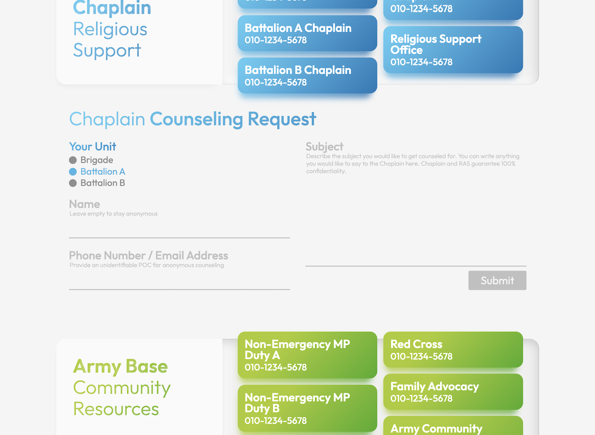

Designs for Caregiving
Service as a KATUSA Sergeant at U.S. Army Camp Humphreys | Apr 2021 - Aug 2022

My Mission
Serving as a soldier in a foreign country can be challenging, often leading to homesickness, loneliness, and even depression. This is where my section came in. Our mission was to provide soldiers with a sense of purpose and meaning, ensuring the morale within the unit remained strong.
Challenge
One issue we encountered was that, despite having numerous opportunities to support and assist soldiers, they were sometimes unaware of these resources. So I started to question:
“How can I make the care resources and events more accessible?”
Creating Unique Flyers
One thing I could do best was to create attention-grabbing designs. In the Army, most flyers tend to be quite similar, focusing on practicality and utility. To capture soldiers’ attention, I designed flyers that stood out with visually engaging elements. As a result, we were able to attract a significant number of soldiers, encouraging them to learn more about the events being offered.

Creating Emergency Resources Website & Card
Some soldiers were hesitant to knock on the door of the caregiver likely due to introversion or uncertainty about how to ask for assistance.
To address this, I developed the emergency resources website attached the emergency resources card, offering soldiers a convenient way to access help. The website also included an anonymous counseling section, allowing soldiers to reach out to counseling services without disclosing their identity.
I was later invited to present this model at an 8th Army Unit Ministry conference, and the program was subsequently adopted as a benchmark by multiple Unit Ministry Teams within the 8th Army.
